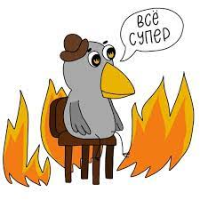
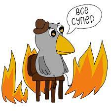

Формы для обратной связи
Post scriptum
Заранее прошу прощения если у меня не получится быстро ответить на вашу обратную связь. В некоторые периоды жизнь студента напоминает одну широко известную в среде Вышкинцев картинку:
Заранее прошу прощения если у меня не получится быстро ответить на вашу обратную связь. В некоторые периоды жизнь студента напоминает одну широко известную в среде Вышкинцев картинку:
